Explainable matches · Tailored with your approval · Reviewed by a human
skylarkgo.inTeam Synapse XCapstone 2026
01 · The problem
For someone applying across borders, volume is the problem.
aRoles they cannot legally take.
bCompanies that will never sponsor them.
cMass-applying that burns their name with recruiters.
Each mark is a listing. Lit ones are roles this candidate can take. Illustrative.
Skylark02 / The problem
02 · Why existing approaches fall short
Job boards optimise for volume. Skylark is built the other way round.
A typical job boardSkylark
EligibilityYour problemA factor in every score. A role you can’t take is capped at 35.
Match scoreOne opaque percentageSeven weighted factors, each with a written reason.
ApplicationsThe same resume everywhereTailored per role. Nothing changes until you accept it.
Quality controlNoneA specialist checks five points within a 24-hour SLA.
Employer formsRetyped for every portalAnswered once, in the answer vault.
ProofTake our word for itPortal and confirmation reference on every submission.
Skylark03 / Where job boards fall short
Introducing
A human-assisted job application service for people applying across borders.
skylarkgo.in
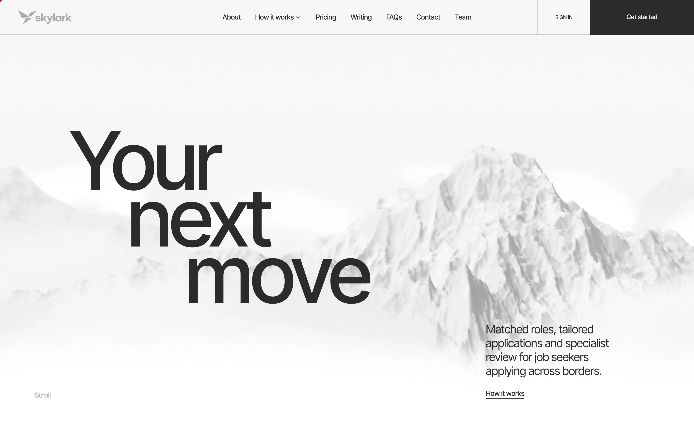
01 Explainable matches02 Tailored by AI, approved by you03 Reviewed by a human
03 · The vision
Apply only where you can actually work.
One validated profile. Every live role ranked on whether you can legally take it, explained, approved by you, and checked by a human before it is sent.
Live listings from
Arbeitnow16 Greenhouse boardsAdzunaThe MuseLever
Adzuna, The Muse and Lever when configured · routes are illustrative
Bengaluru → Berlin · London · Dubai · Singapore · Sydney · Toronto · New York
Skylark05 / The vision
04 · The product
One product, end to end.
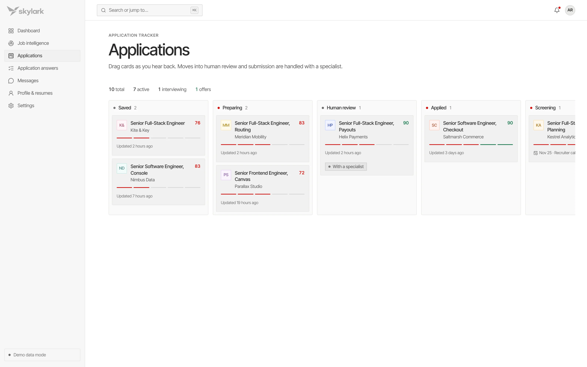
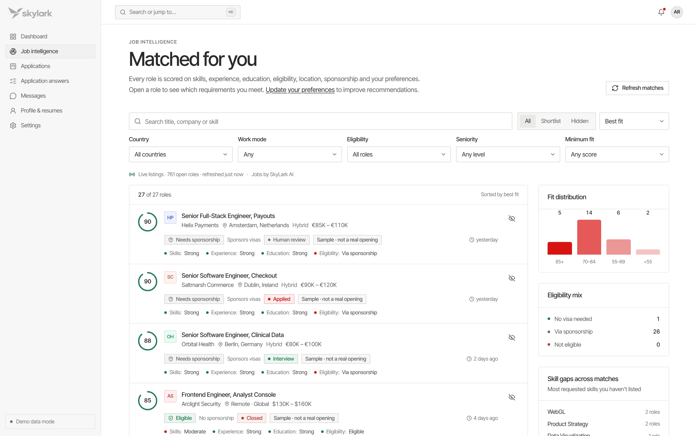
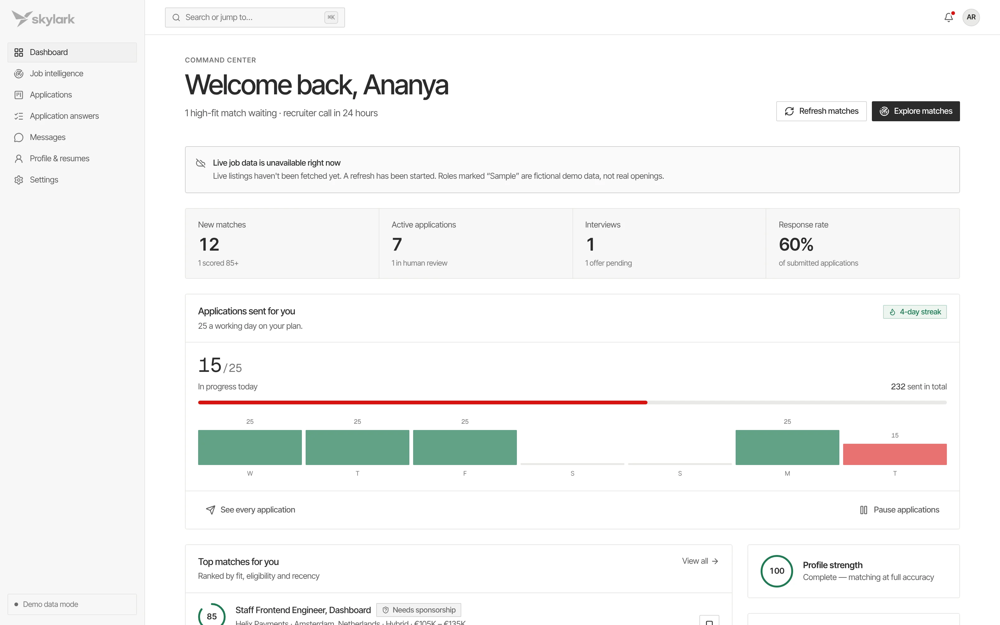
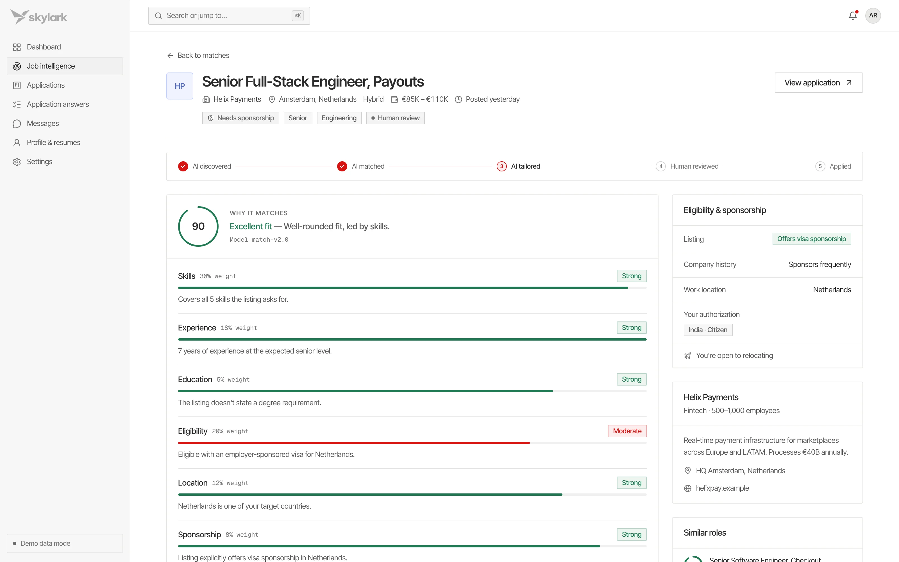
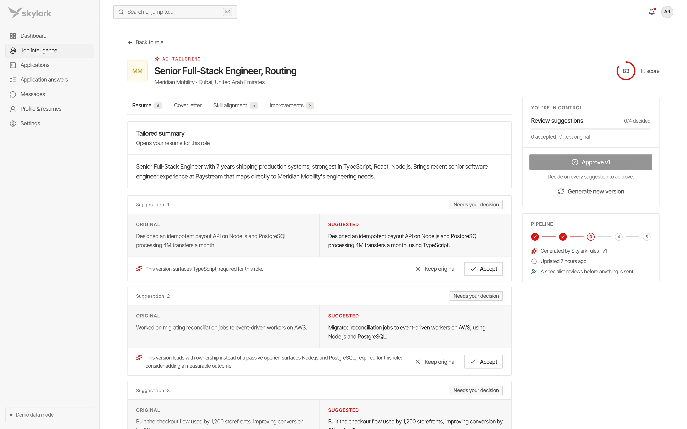
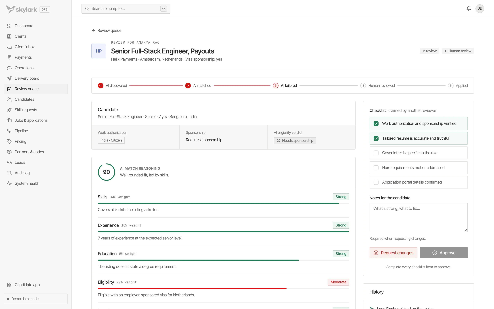
Six surfacesCandidate app and operations consoleDashboard, ranked jobs, fit analysis, tailoring, tracker and the specialist’s review screen.
01 · DashboardToday, at a glanceNew matches, active applications, interviews and today’s delivery progress.
02 · Why it matchesEvery factor, with its reasonWeight, rating and a sentence for each of the seven factors, plus eligibility and sponsorship.
03 · TailoringOriginal against suggestedAccept or keep the original, one suggestion at a time.
04 · Specialist reviewA human, with a checklistEligibility, AI reasoning and the review checklist side by side.
Captured from the running app in demo mode · companies, jobs and people are fictional sample data
05 · Core capabilities
01Explainable matching
02Eligibility first
03Tailoring you approve
04Human review
05Answer the forms once
06Delivery with receipts
Skills, experience, education, eligibility, location, sponsorship and preferences, each scored 0 to 100 with a sentence you can read.
Where you can work, whether you need sponsorship and where you’d relocate are first-class fields. A role that won’t sponsor someone who needs it is capped at 35.
A role-specific summary, rewritten bullets, a cover letter and a skill-gap table, each with its reason. Nothing is applied until you accept it.
A specialist confirms work authorization, accuracy, the cover letter, hard requirements and portal details within a 24-hour SLA.
The questions every portal asks live in one vault. Unanswered stays unanswered, and EEO answers are unreadable from any browser session.
Plans carry a daily quota of 10, 25 or 40 applications. Only a recorded submission, with portal and confirmation reference, moves the counter.
Skylark07 / Core capabilities
06 · How it works
Who does what, at every step.
Skylark08 / How it works
07 · System architecture
Four layers. One repository interface.
Overview
Every service talks to one Repository. Supabase behind it in production; an in-memory seeded store in demo mode.
01 · Experience
Next.js 16 App Router serves the marketing site, the candidate app, the operations console and messages.
02 · Server
proxy.ts is an optimistic gate, not the lock. Authorization is re-checked in a data access layer on every page, action and route handler.
03 · Domain services
Matching, tailoring, reviews and the job pipeline. They never know which store they are using.
04 · Data
Postgres with row level security on every table, Supabase Auth (email and Google) and private Storage.
External services
Vercel Cron, job boards, Claude, Gemini, Razorpay, Google sign-in and SMTP, each behind its own interface. Functions run in Sydney, next to the database.
Seven published weights. Every score shows its working.
score = Σ wi · si
if ineligible: min(score, 35)
src/lib/services/matching/engine.ts
Weighted sum
0
cap 35
Example · candidate in India targeting Germany · Berlin listing offers sponsorshipSame listing · employer states it will not sponsor
And one more rule
Skills seen only in a candidate’s public GitHub repositories are shown as evidence, never added to the score.
Skylark11 / The match engine
10 · Feature deep dive
Tailoring you approve.
The workspace
A tailored summary, rewritten bullets, a cover letter and a skill-gap table, for one specific role.
01
Every suggestion shows the original, the rewrite, and the reason for the change.
02
Nothing is applied until you accept it. You approve the version, then a specialist reviews it.
03
The prompt forbids invented employers, titles or numbers. Output is checked against a Zod schema, and a deterministic rules provider takes over when no key is set or a call fails.
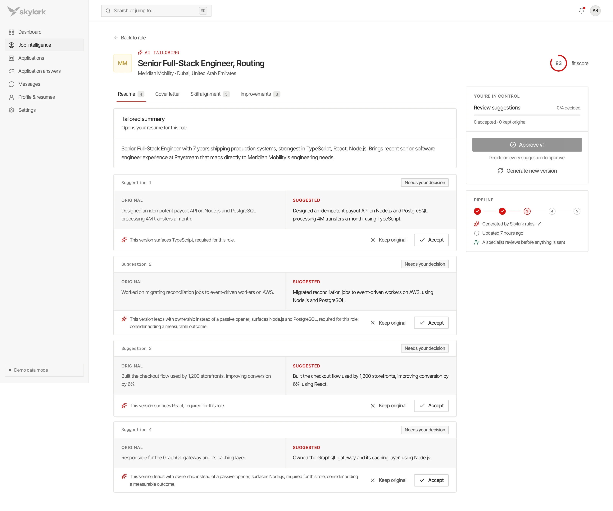
Real tailoring workspace · demo mode, fictional sample data
11 · User journey
From sign-in to submitted.
skylarkgo.in
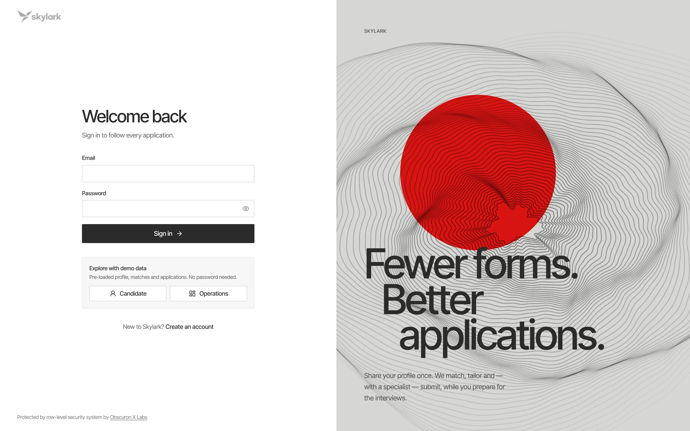
Arrive
Sign in
Today’s matches
Ranked roles
Why it fits
Approve changes
Track it
Real screens · demo mode · fictional sample data
12 · Engineering highlights
iTested against real Postgres
iiOne interface, two stores
iiiAI with a deterministic fallback
ivFail closed, never invent
vIdempotent by design
Security claims are tested, not asserted.
Every migration runs in an in-process Postgres (PGlite). The suite proves candidates can’t read each other’s rows, promote themselves or forge AI-authored events.
Why it matters It caught a column REVOKE that did nothing while a table-wide grant existed.
One repository interface, two stores.
Supabase Postgres in production. An in-memory seeded store when the variables are absent.
Why it matters The whole product runs locally with zero setup, and services never know which store they use.
AI behind an interface, never in charge.
Product code calls AIProvider, never a model SDK. Output is validated against a Zod schema.
Why it matters If a call fails or no key is set, the rules provider answers. An outage never blocks a candidate.
Fail closed. Never invent.
If skill vocabularies are down, verification says so. If exchange rates can’t be fetched, prices stay in INR. If job data is stale, candidates are told.
Why it matters A candidate never sees a confident answer the system doesn’t have.
Idempotent by design.
Every enqueue carries a key. Workers claim with FOR UPDATE SKIP LOCKED. Saving a job sends an Idempotency-Key.
Why it matters A retried cron or a double click can’t schedule or save anything twice.
Skylark14 / Engineering highlights
13 · Technology
Every tool has a job.
InterfaceData & servicesDelivery & quality
Skylark15 / Technology
14 · Security, reliability & privacy
Enforced by the database, not only by code.
Storage Private bucket, per-user folders, magic-byte checks, short-lived signed URLs.